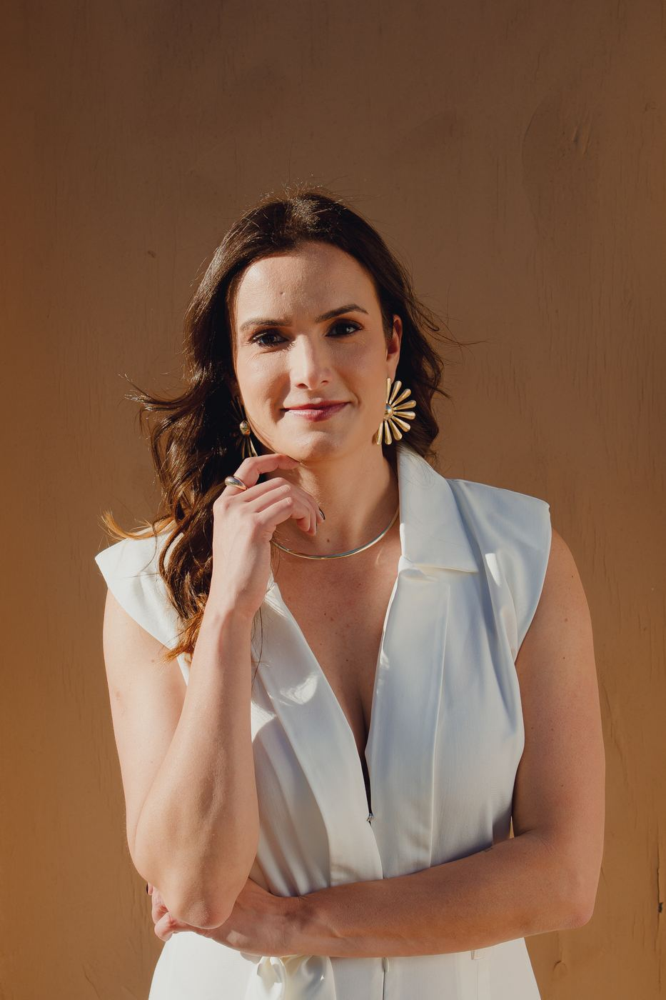
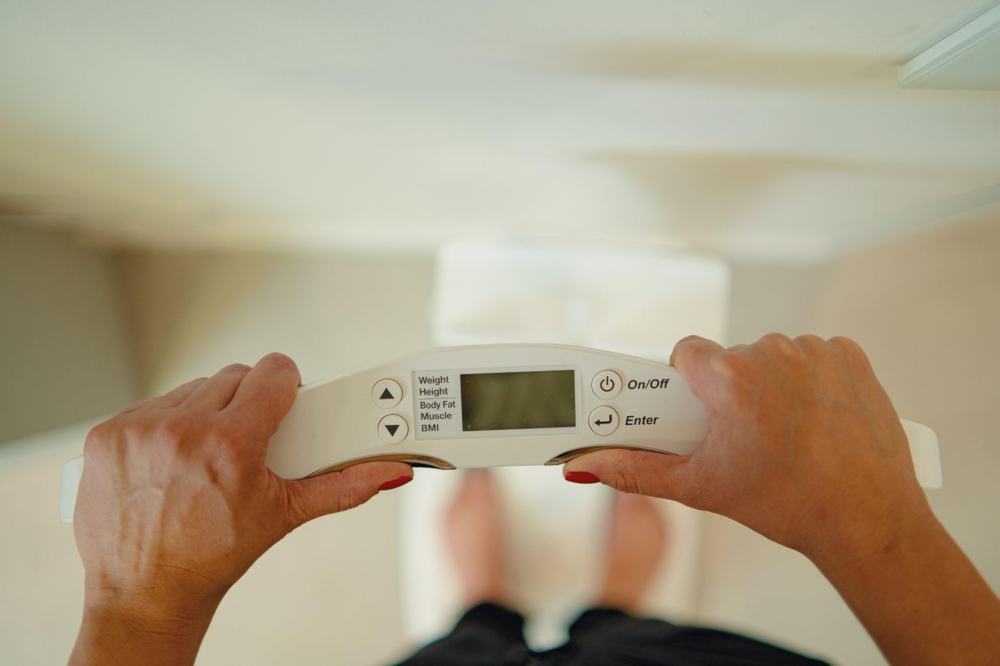
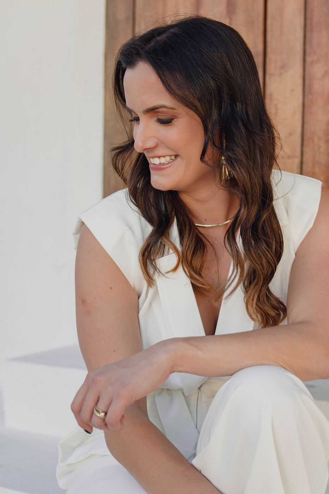
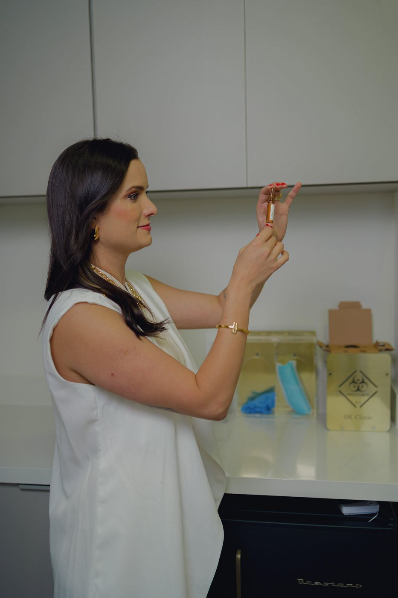
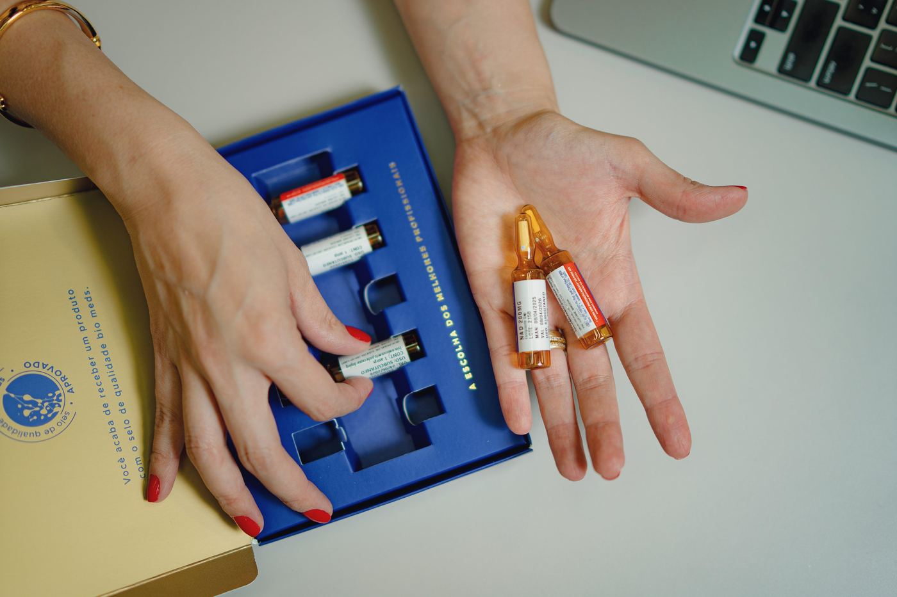
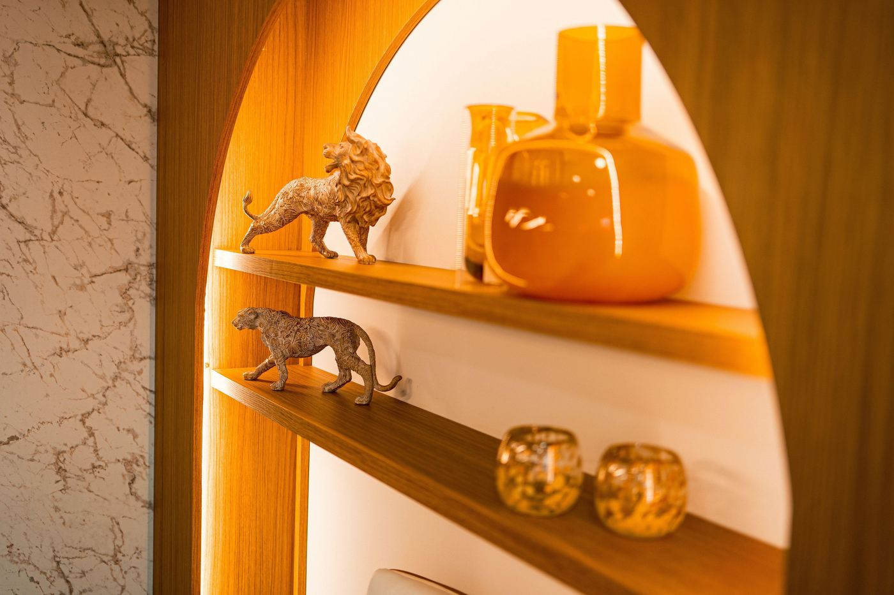
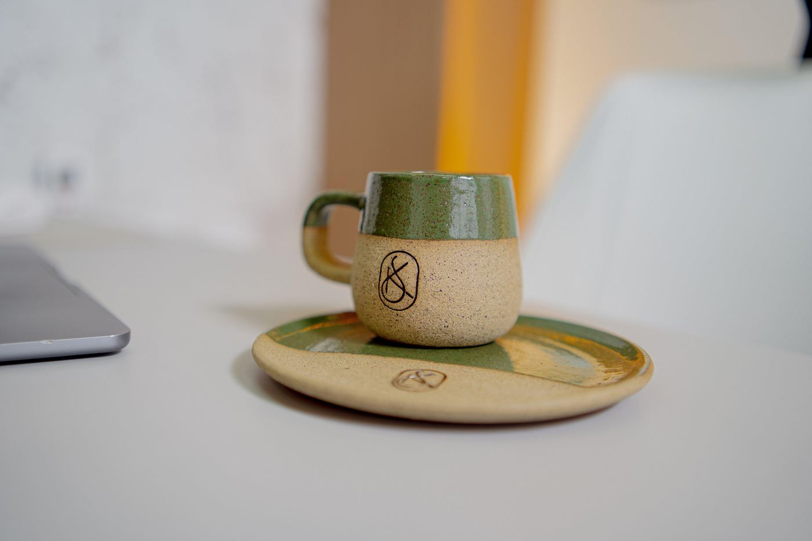
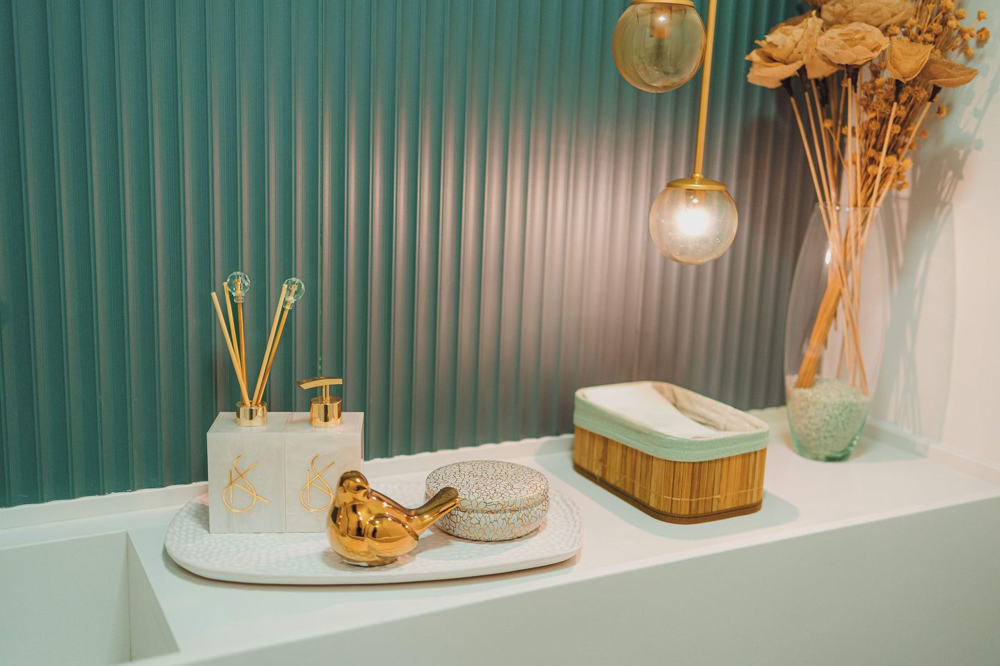
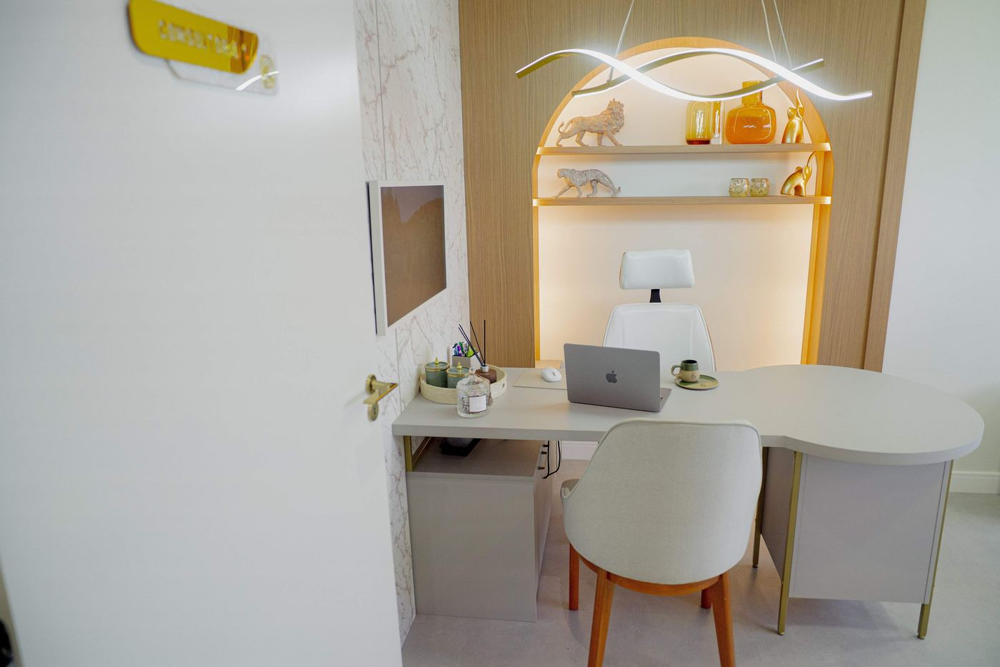

Que bom ter você aqui. Veja com calma todos os nossos cuidados.
Medicina integrativa · Jundiaí e onlineCuidamos da causa, não só do sintoma.
Emagrecimento, menopausa, saúde hormonal, fertilidade e pele, com uma avaliação completa e um plano pensado só para você.
Dra. Jacqueline Sampaio · Médica · CRM-SP 160977 confirmar CRM e RQE

Você sente que algo não vai bem, mesmo quando os exames dizem que está tudo normal?
Aqui, hormônios, nutrição, metabolismo e intestino são avaliados juntos, para encontrar o que está por trás de cada sintoma.
Qual é o seu objetivo?
Toque no que mais se parece com você para ver como a clínica pode ajudar.
01Emagrecer com saúde
Para quem já tentou de tudo e o peso volta

Emagrecer sem perder músculo, com acompanhamento médico de perto.
É o programa de emagrecimento da clínica: 4, 8 ou 12 semanas de acompanhamento médico, com bioimpedância toda semana e o plano ajustado a cada etapa, para o resultado se sustentar depois.
Ver como funciona o programa →O que o programa inclui
- Bioimpedância semanal
- Preservação da massa muscular
- Terapia farmacológica, quando indicada
- Terapias injetáveis complementares
A indicação de cada tratamento depende de avaliação médica individual.
Quero saber sobre o Recomeço02Menopausa e hormônios
Calorões, sono ruim, cansaço, libido baixa

Energia para viver cada fase.
Uma avaliação hormonal completa para entender o seu momento e indicar o tratamento certo, quando ele for necessário.
Implantes hormonais
Conhecidos como "chip", são inseridos sob a pele num procedimento minimamente invasivo e liberam os hormônios de forma gradual.
A indicação de cada tratamento depende de avaliação médica individual.
Quero cuidar dos meus hormônios03Lipedema
Dor, peso e hematomas fáceis nas pernas
Lipedema é uma condição médica, não só estética.
Muitas mulheres passam anos ouvindo que é "falta de dieta". O tratamento é individual e o diagnóstico conta com termografia.
Sinais de atenção
- Dor e sensibilidade ao toque
- Sensação de peso nos braços ou nas pernas
- Hematomas que surgem com facilidade
Objetivo do cuidado
Aliviar a dor, controlar os sintomas e devolver qualidade de vida.
A indicação de cada tratamento depende de avaliação médica individual.
Quero uma avaliação04Quero engravidar
Para a mulher, o homem e o casal
Preparando o corpo para a gestação.
A fertilidade integrativa investiga a causa-raiz e une a medicina convencional a práticas complementares, cuidando da mulher, do homem e do casal.
A indicação de cada tratamento depende de avaliação médica individual.
Quero me preparar05Pele firme e cabelo forte
Flacidez, queda de cabelo, pele sem viço

Naturalidade em cada detalhe.
Hipro
Ultrassom para flacidez que estimula a produção de colágeno. Face, papada, abdome, glúteo, coxa e braço.
Bioestimulador de colágeno
Mais firmeza, elasticidade e espessura da pele, com efeito natural e progressivo. O pico costuma aparecer entre 3 e 6 meses.
Terapia capilar
Microinfusão de medicamentos na pele (MMP), protocolo injetável e capacete de LED, escolhidos após avaliação médica.
A indicação de cada tratamento depende de avaliação médica individual.
Quero saber mais06Prevenção e longevidade
Para quem quer se antecipar

Decisões mais precisas a partir do seu DNA.
Teste genético
Terapias injetáveis
Nutrientes direto onde o corpo precisa, por via endovenosa ou intramuscular: ferro, complexo B, vitaminas A, D, E e K, aminoácidos e antioxidantes.
A indicação de cada tratamento depende de avaliação médica individual.
Quero saber maisUm novo capítulo começa com cuidado.
O programa de emagrecimento da SK, para quem já tentou de tudo e viu o peso voltar. Você faz uma avaliação completa, define com a médica a duração do programa e é acompanhada de perto toda semana.
- Acompanhamento médico
- Bioimpedância semanal
- Terapia farmacológica, quando indicada
- Terapias injetáveis complementares
- Preservação da massa muscular
- Monitoramento e ajustes periódicos
Dra. Jacqueline Sampaio
Médica · CRM-SP 160977 confirmar
Cuidado em emagrecimento e saúde hormonal feminina.
Uma consulta que começa ouvindo. A Dra. Jacqueline olha para hormônios, nutrição, metabolismo e intestino como partes de um mesmo corpo, e monta um plano que cabe na sua rotina.
Formação e trajetória: confirmar com a clínica
Acompanhe a Dra. no InstagramPrimeiro entender. Depois tratar.
Nenhum tratamento começa antes de a avaliação terminar.
Investigar
Consulta sem pressa, com histórico, sintomas, rotina, exames e bioimpedância, para encontrar a causa.
Planejar
Um plano montado para o seu corpo e o seu objetivo, a partir do que foi investigado. Sem fórmula pronta.
Acompanhar
Reavaliações e ajustes ao longo do caminho. O acompanhamento faz parte do tratamento.
"Clínica excelente, já começa na recepção impecável (...) Dra. Jaqueline, uma médica atenciosa, amorosa e além de tudo excelente."
Kelly A., no Google
"Há anos eu procurava um lugar que realmente me ajudasse a cuidar de mim (...) Na SK Clinic encontrei tudo isso e muito mais."
Juliana F., no Google
"A Dra. Jacqueline é uma profissional extremamente competente, atenciosa e dedicada."
Luciane S., no Google
Um espaço acolhedor, pensado em cada detalhe.
No 16º andar do One Office Tower, com lounge, consultório e um café esperando por você.




Antes de agendar
Como faço para agendar?
Pelo WhatsApp. Toque em qualquer botão desta página e a recepção responde com os horários disponíveis.
Onde fica a clínica?
The One Office Tower, Rua Hilda Del Nero Bisquolo, 102, sala 1602 (16º andar), Jardim Florida, Jundiaí/SP.
Atende por convênio?
O atendimento é particular. confirmar e incluir se emite recibo para reembolso
Atende online?
Sim. A consulta pode ser feita por videochamada, de qualquer cidade. Alguns cuidados, como bioimpedância, implantes hormonais e terapias injetáveis, são feitos presencialmente na clínica, em Jundiaí.
Quanto tempo dura a primeira consulta?
confirmar com a clínica
Tem estacionamento?
confirmar com a clínica
Não sabe por onde começar?
Conte para a recepção o que você está sentindo, e ela indica o melhor caminho para o seu caso.
Falar com a recepção